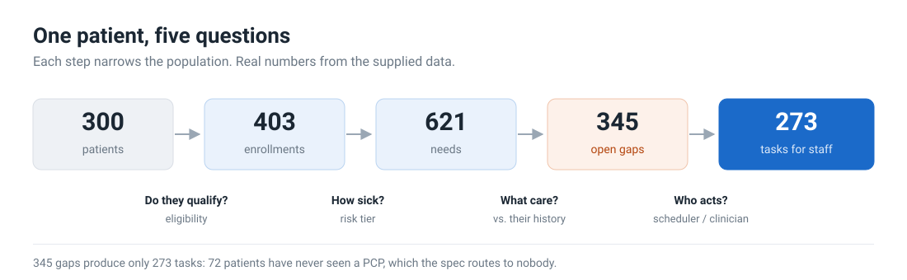
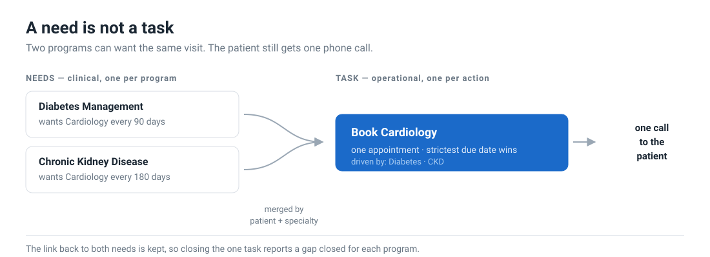
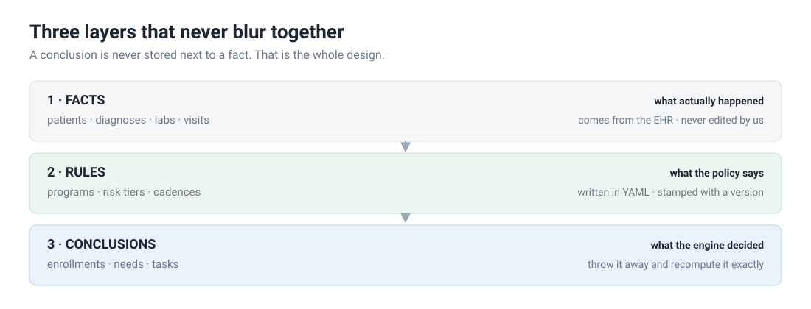
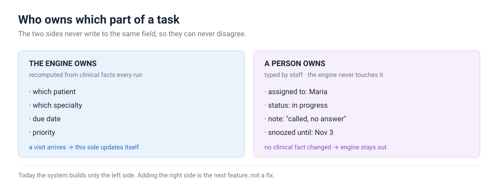

<!doctype html>
<meta charset="utf-8">
<title>Model of Care — diagrams</title>
<style>
  body { font-family: system-ui, -apple-system, "Segoe UI", Roboto, sans-serif;
         margin: 0; background: #f6f7f9; color: #1b2733; }
  header { position: sticky; top: 0; background: #fff; border-bottom: 1px solid #d9dee5;
           padding: 12px 24px; display: flex; gap: 18px; align-items: center; flex-wrap: wrap; }
  header b { margin-right: 8px; }
  header a { color: #1b6ac9; text-decoration: none; font-size: 14px; }
  header a:hover { text-decoration: underline; }
  section { padding: 28px 24px 8px; }
  img { width: 100%; max-width: 1100px; background: #fff;
        border: 1px solid #d9dee5; border-radius: 10px; display: block; }
</style>
<header>
  <b>Diagrams</b>
  <a href="#p1">1 · Pipeline</a>
  <a href="#p2">2 · Needs vs tasks</a>
  <a href="#p3">3 · Three layers</a>
  <a href="#p4">4 · Who owns what</a>
</header>
<section id="p1"></section>
<section id="p2"></section>
<section id="p3"></section>
<section id="p4"></section>
